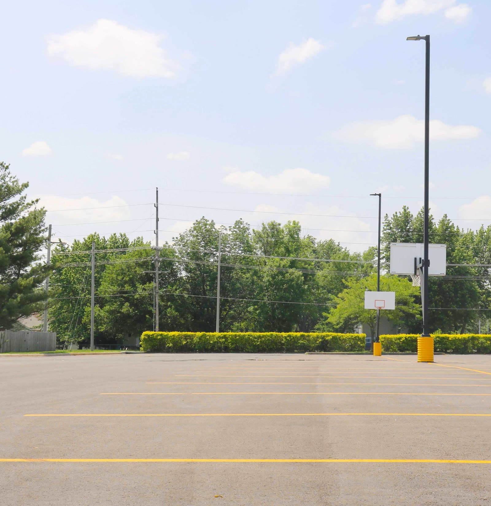
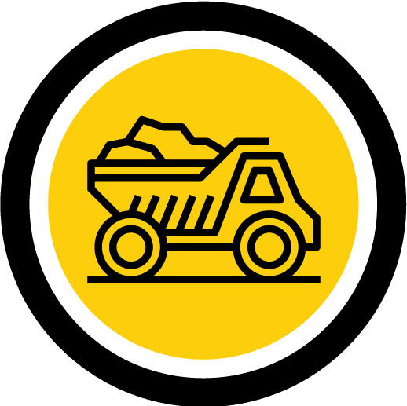
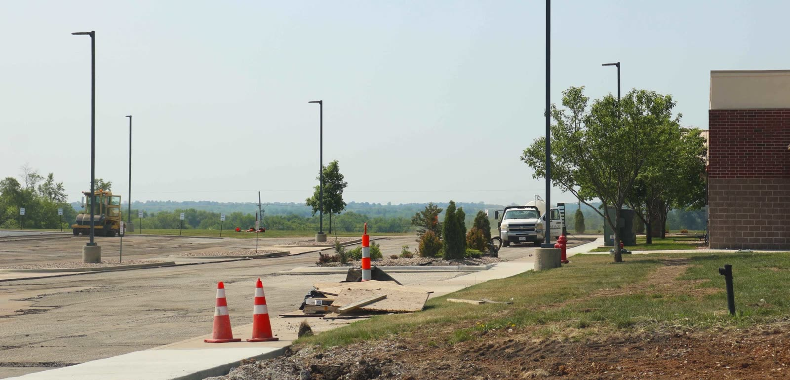
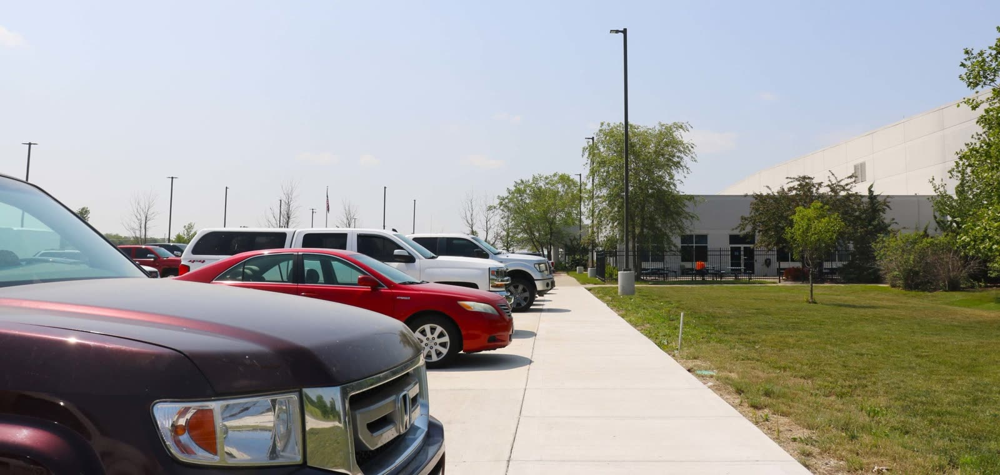
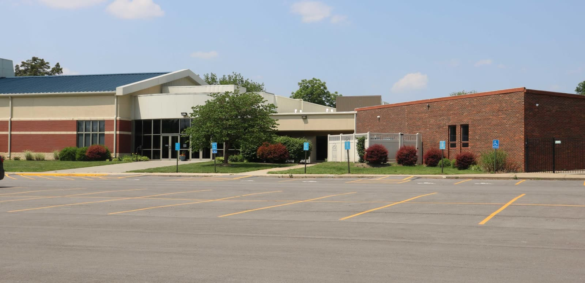

Free Evaluation and Estimate
We evaluate your commercial property and answer all your paving questions until there are none remaining. We are a solutions company.
Commercial asphalt, concrete and excavation for the Kansas City metro. Free estimates.
Making your project our mission.
5.0 Google rating Family-owned since 2014 · 20+ years of experience · OSHA-certified crews
Max Paving is a start to finish maintenance and new construction company with decades of experience in the concrete and asphalt industry, serving commercial and residential customers within the Kansas City metropolitan area.
Working with our certified team, you can expect top-class communication, a turnkey process with integrity, and promises to be kept.
About Max Paving
Specializing in commercial paving with a determined problem-solving mindset, Max Paving is a safe industry option. When you have a project, let us make it our mission to take you through the steps:
We evaluate your commercial property and answer all your paving questions until there are none remaining. We are a solutions company.
We set the project up for success with water drainage with subgrade conditions in mind.

With a professional process created for the customer, we treat every project like our own.
Excavation and site preparation, commercial concrete and commercial asphalt — all in-house, all turnkey.

Appropriately prepared for the paving process, with drainage and subgrade in mind.

Repairs and new installations backed by over two decades of concrete construction experience.

From a piece of land to a level parking lot — improving, repairing and maintaining made easy.
Hired Max Paving a few years back to pave my driveway and pour a concrete pad for one of my buildings. I thought they did an incredible job — and what really proved it was how everything held up afterward. Both the driveway and the pad have lasted incredibly well through everything Missouri weather throws at them. No cracking, no settling, no surprises. That’s exactly why they’re the first call I made when I had more work come up. Gary and the crew did it right the first time. Highly recommend.
I’ve been working with Gary and Max Paving for 8-9 years now and I would highly recommend their services. Gary is fantastic to work with, great with customers, and his crews do fantastic work.
Max Paving was a pleasure to work with from start to finish. Their pricing was fair and straightforward. They had excellent communication from start to finish and we always knew what was happening and when. What stood out most was their willingness to do whatever it took to make sure we were happy with the results. Highly recommend.
Based in Blue Springs, MO, Max Paving serves commercial and residential customers across the Kansas City metropolitan area on both sides of the state line. Not sure if we cover your location? Call (816) 220-7777 or request a quote.
Yes. Every project starts with a free evaluation and estimate. We look at your property, answer all of your paving questions, and give you a clear plan before any work begins.
Max Paving is based in Blue Springs, MO and serves commercial and residential customers throughout the Kansas City metropolitan area, including Independence, Lee's Summit, Grain Valley, Raytown, Liberty and the Kansas suburbs.
Yes. We are a start-to-finish contractor for commercial asphalt paving, commercial concrete, and residential concrete driveways, and we do our own excavation and site preparation in-house.
Our residential work today is concrete driveways on larger residential properties. Commercial paving — parking lots, flatwork, repairs and maintenance — is our specialty.
Three steps: a free evaluation and estimate, excavation and site preparation with drainage and subgrade in mind, then construction or maintenance of the flatwork and asphalt paving. We keep you updated at every stage.
Our on-site team members are OSHA certified and go through continually updated safety training. Before arriving at a project we review its general and specific hazards with the crew.
We look forward to hearing about your mission, and making it possible with our services.
Get a Quote